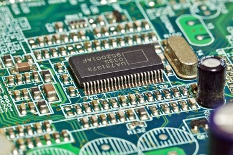

- Random Access Memory (RAM) - Is computer memory that a processor or computer accesses first or directly.

https://www.crucial.com/articles/about-memory/is-my-ram-compatible-with-my-motherboard - Read-Only Memory (ROM) - A type of storage medium that permanently stores data.
 https://testbook.com/computer-awareness/difference-between-ram-and-rom - Cache Memory - Is a small-sized type of volatile computer memory that provides high-speed data access to processor.
https://medium.com/computer-architecture-club/fastest-memory-in-your-pc-e6f0a70a0a4f - Register - Is one of a small set of data holding places that are part of the computer processor.

https://www.totalphase.com/blog/2023/05/what-is-register-in-cpu-how-does-it-work/